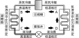

2022年
問題66 蒸気圧縮冷凍サイクルに関する次の記述のうち，最も不適当なものはどれか．
（1）凝縮器により冷媒が液化する．
（2）圧縮機により冷媒の比エンタルピーが増加する．
（3）膨張弁により冷媒の圧力が低下する．
（4）蒸発器により冷媒がガス化する．
（5）冷凍サイクルでは凝縮器，圧縮機，膨張弁，蒸発器の順に冷媒が循環する．
2022年
問題66 正解（5） 頻出度AAA
蒸気圧縮式冷凍サイクルは，圧縮機⇒凝縮器⇒膨張弁⇒蒸発器⇒圧縮機･･･と冷媒が循環する．
蒸気圧縮式冷凍サイクルとは，最も普及しているフロン等を使った冷凍機の冷媒サイクルのことである（2022-66-1図，2022-66-1表，2022-66-2表参照）．
2022-66-1図 蒸気圧縮式冷凍サイクル

2022-66-1表 蒸気圧縮式冷凍サイクル
| サイクル | 行程 | 説明（冷媒の状態） | 温度 | 圧力 | 比エンタルピー |
| A → B | 圧縮 | 冷媒は圧縮され高温高圧へ | 上昇 | 上昇 | 増加 |
| B → C | 凝縮 | 凝縮して湿り蒸気から液体冷媒へ | 一定 | 一定 | 減少 |
| C → D | 膨張 | 膨張弁を通り，低圧低温へ | 低下 | 低下 | 一定 |
| D → A | 蒸発 | 湿り蒸気から過熱蒸気へ | 一定 | 一定 | 増加 |
2022-66-2表 蒸気圧縮式冷凍サイクルの構成機器
| 冷媒 | フロン，アンモニア，二酸化炭素等 |
| 圧縮機 | 気化した冷媒を圧縮して高圧高温の冷媒とする． |
| 凝縮器 | 高温の冷媒ガスが放熱し凝縮して液体冷媒となる． |
| 膨張弁 | 蒸発器での蒸発に備えて，冷媒を低圧低温の状態にする． |
| 蒸発器 | 液体冷媒が吸熱して蒸発し，冷水を冷やす． |